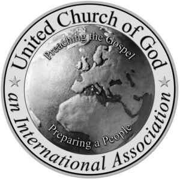

Trade Mark Journal No.2025/035 29 August 2025
WO0000001868893 (9,16,41,45)
Office of origin: United States of America
Date of International Registration:20 September 2024
Date of designation in the UK:
20 September 2024

The mark consists of Two circles encircling a map of the globe with the words "UNITED CHURCH OF GOD" in the upper portion of the upper circle and the words "AN INTERNATIONAL ASSOCIATION" in the lower portion of the circle with the words "PREACHING THE GOSPEL" in the upper portion of the globe and the words "PREPARING A PEOPLE" in the lower portion of the globe.
- Class 9
- Downloadable electronic publications in the nature of magazines, books and booklets in the field of religion, world news and current events; downloadable printable educational materials in the field of religion, world news and current events; non-downloadable electronic publications in the nature of magazines, books, articles, and religious sermons in the field of religion, world news and current events.
- Class 16
- Printed educational materials in the field of religion, world news and current events; printed publications, namely, magazines, books and booklets in the field of religion, world news and current events; printed religious books; printed educational publications, namely, training manuals in the field of religious sermons and pastoral services.
- Class 41
- Educational services, namely, providing educational speakers in the field of religion, world news and current events; educational services, namely, providing classes, seminars and workshops in the fields of religion, world news and current events; religious instruction services; entertainment in the nature of ongoing television programs in the field of religion, world news and current events; entertainment, namely, television news shows; providing religious instruction; providing a website featuring resources, namely, non-downloadable publications in the nature of magazines, books, articles, and religious sermons in the field of religion, world news and current events (terms considered too vague by the International Bureau - Rule 13 (2) (b) of the Regulations); providing on-line publications in the nature of magazines, books, articles, and religious sermons in the field of religion, world news and current events.
- Class 45
- Religious and spiritual services, namely, conducting religious worship, marriage ceremonies, baptismal ceremonies, baby dedications, bereavement ceremonies, and religious counseling; religious and spiritual services, namely, providing gatherings to develop and enhance the spiritual lives of congregants; conducting religious ceremonies; conducting religious prayer services; conducting religious sermons; providing a website featuring information about religious belief systems (terms considered too vague by the International Bureau - Rule 13 (2) (b) of the Regulations).
United Church of God, an International Association
Representative: Tawnya Wojciechowski TRW Law Group, 19800 MacArthur Boulevard, , Suite 1070, Irvine CA 92612, UNITED STATES OF AMERICA